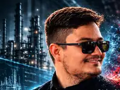

Tecnologia aplicada ao mundo real / portfólio profissional
Gabriel
Reis Duarte.
Desenvolvo soluções que conectam dados, software e engenharia — da inteligência operacional à performance no automobilismo.

Escolha uma área para explorar
Sobre mim
Engenharia de ideias.
Execução com dados.
Meu foco é aproximar tecnologia e engenharia de problemas concretos. Trabalho com análise, desenvolvimento e prototipagem de soluções que ajudam a compreender sistemas complexos e apoiar decisões.
O portfólio reúne estudos reproduzíveis e projetos de pesquisa. Dados sintéticos e demonstrações são identificados como tal; projetos em desenvolvimento não são apresentados como sistemas homologados em produção.
Python & SQLData AnalyticsMachine LearningBIAutomotive Technology